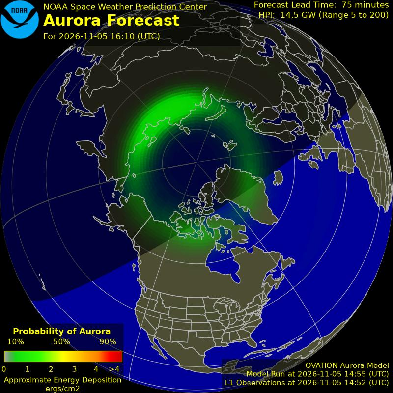

🗺️ National products
🌌 Aurora & space weather (NOAA SWPC)

🌧️ WPC charts

🗣️ WPC forecast discussions
📝 Short Range (Days 1-2)
...Strengthening coastal storm to bring a soaking rain to the Northeast Thursday into Friday, with accumulating snow likely in the higher elevations of New York and northern New England...
...Polar air will surge into the eastern half of the nation behind the large cyclone, with heavy lake-effect snow in Michigan's Upper Peninsula...
...Pacific storm system to bring heavy rain, strong winds, and blizzard conditions to the Sierra Nevada on Friday...
The stage is set for a polar air mass over eastern Canada to plunge into the eastern half of the U.S. through the next few days as an anomalous shift in the weather pattern takes place across North America. In the mean time, a low pressure system being energized by this weather pattern is bringing scattered thunderstorms and gusty winds across the Ohio and Tennessee Valley early this morning. This system is forecast to track across the eastern U.S. while expanding in size through tonight as the center passes east of Cape Cod. A steady rain will gradually overspread southern New England by this evening, possibly heavy at times near the coast, along with increasing northeasterly winds and minor coastal flooding possible around high tide along parts of the coast near New York City. As colder air wraps around the huge circulation of the cyclone, rain will likely change to snow tonight and into Friday over the higher terrain of New York, northeastern Pennsylvania, and northern New England. Accumulating snow and slick travel are likely at elevation, while lower elevations and valleys will mostly see rain but possibly ending as a wintry mix Friday morning. Wet snow could also fall in the southern and central Appalachians especially Friday night into Saturday morning, with some areas seeing their first snowflakes of the season.
The polar air mass will overspread much of the central and eastern U.S. behind the cyclone heading into the weekend. High temperatures will run well below normal by Friday, and overnight lows will fall into the 20s across much of the central U.S. Below freezing temperatures are forecast to reach as far south as the Deep South by Saturday morning. This sets the stage for a widespread frost and freeze across the South and Southeast this weekend. Cold northwest winds crossing the relatively warm Great Lakes will produce rounds of lake-effect rain and snow through Friday. The heaviest snow is expected over the higher terrain of Michigan's Upper Peninsula, where significant accumulations are possible. Gusty winds and very dry air behind the front will also raise fire danger across parts of the Southeast for today.
In the western U.S., warm and dry conditions will continue through Thursday, with highs challenging a few daily records in parts of the Northwest and Great Basin. By Friday, weather conditions along the West Coast will deteriorate quickly as a strong Pacific storm system with a plume of subtropical moisture moves ashore. Moderate to heavy rain and strong southerly winds are expected across northern California and the Pacific Northwest. The higher elevations of the Sierra Nevada can expect heavy snow and strong winds by Friday night into Saturday morning, likely creating blizzard conditions that will make travel dangerous to impossible. Strong winds will also spread into the Great Basin. In addition, a separate system moving in from Baja California on Friday will bring showers to southern California, locally heavy near the coast. By Saturday morning, rain showers and high-elevation wet snow will reach into much of the Great Basin toward the Four Corners. Meanwhile, the separate system farther south will spread showers and embedded thunderstorms through southern Arizona and New Mexico, reaching western Texas by Saturday morning.
🌧️ Excessive Rainfall - Days 1-2
Day 1
A Marginal Risk was introduced in this update based off of the 12Z HRRR and REFS guidance, which both show a narrow stripe of 1-3" somewhere between Philadelphia and New York. By 18Z this afternoon, convection is expected to focus along an east-west oriented warm front lifting into the I-95 corridor. Should storms become surface based and begin to rotate, forecast hodographs suggest the Bunkers motion will be favorably aligned with the boundary to support cell training over urbanized areas. Cell coverage remains in question, but given the signal in the 12Z guidance along the urban corridor, opted to upgrade to a Marginal Risk.
Asherman
Day 2 Valid 12Z Fri Nov 13 2026 - 12Z Sat Nov 14 2026
The probability of rainfall exceeding flash flood guidance is less than 5 percent.
Kleebauer
Day 3 Valid 12Z Sat Nov 14 2026 - 12Z Sun Nov 15 2026
Area of heavy rainfall in the form of a moderate, yet progressive atmospheric river will send another wave of enhanced precipitation into the vicinity of the Olympic Peninsula on Saturday leading to a low-end threat of flash and areal flooding for the weekend. Heavy precipitation in the periods prior have allowed for local streams and rivers, mainly the Skokomish in the valley areas around the Olympics, to swell enough to warrant some extra caution for flooding around the river itself. Latest USGS gauge data signals the river running high, into the 75th percentile to date, for streamflows with some of the gauges running just below action stage at this juncture. Rainfall forecasts of an additional 1-3", locally higher, are expected for the D3 time frame with much of the rain occurring in a 12-hr window before the passage of a cold front late in the forecast period (Sat night into Sun morning). This could send some of the river banks overflowing and cause some local flood concerns, some of which could be flashy given the nature of the heavier rainfall on top of the hydrologic function of the river. With the forecast remaining fairly steadfast in its presentation and with previous coordination with the local Seattle WFO already okay with the current risk area, felt there was no necessary changes needed with the latest forecast as everything remains on track from a synoptic and hydrologic standpoint.
🌧️ Excessive Rainfall - Day 3
Day 3
Area of heavy rainfall in the form of a moderate, yet progressive atmospheric river will send another wave of enhanced precipitation into the vicinity of the Olympic Peninsula on Saturday leading to a low-end threat of flash and areal flooding for the weekend. Heavy precipitation in the periods prior have allowed for local streams and rivers, mainly the Skokomish in the valley areas around the Olympics, to swell enough to warrant some extra caution for flooding around the river itself. Latest USGS gauge data signals the river running high, into the 75th percentile to date, for streamflows with some of the gauges running just below action stage at this juncture. Rainfall forecasts of an additional 1-3", locally higher, are expected for the D3 time frame with much of the rain occurring in a 12-hr window before the passage of a cold front late in the forecast period (Sat night into Sun morning). This could send some of the river banks overflowing and cause some local flood concerns, some of which could be flashy given the nature of the heavier rainfall on top of the hydrologic function of the river. With the forecast remaining fairly steadfast in its presentation and with previous coordination with the local Seattle WFO already okay with the current risk area, felt there was no necessary changes needed with the latest forecast as everything remains on track from a synoptic and hydrologic standpoint.
Kleebauer
Day 3 threat area: www.wpc.ncep.noaa.gov/qpf/99epoints.txt
🌧️ Excessive Rainfall - Days 4-5
Day 4 and Day 5
...Eastern Texas/Western Louisiana...
Uncertainty remains in the rainfall forecast from the Day 3 into the Day 4/Sunday period across the southern Plains to Gulf Coast as a complex split flow pattern evolves. For Sunday, northern stream energy should merge with/overtake a leading southern stream wave providing the necessary lift to support scattered to widespread storms. Southeasterly flow setting up on the southwestern side of post-frontal high pressure will lead to moist Gulf return flow this weekend and particularly into Sunday, helping to push a lingering frontal boundary over the Gulf back north as a warm front into Texas. The combination of moisture and modest instability as well as strong lift along the frontal boundary/coastal convergence should support the potential for some more robust thunderstorms producing locally heavy downpours. Despite the latest 00Z GFS/AIGFS remaining outliers on depicting heavier amounts, the rest of the deterministic guidance are well clustered on the potential for heavy rainfall across eastern Texas into western Louisiana, with locally heavy totals of 3-5" possible. This would be more than sufficient to support a threat for at least isolated flash flooding, and possibly a higher risk as confidence increases in the forecast.
...Gulf Coast...
Guidance indicates the upper-energy will translate eastward Day 5/Monday possibly leading to some additional storms along the Gulf Coast. However, strengthening high pressure to the north and a reinforcement of colder, dry air along the backside of the wave look to help push the frontal boundary into the Gulf. This should keep greater moisture/instability and the focus for storms mostly offshore. Even if the boundary/storms were to set up a bit further north along the coast, FFGs are high and would require a much greater signal for widespread coverage/several inch rainfall totals to raise a concern for flash flooding. Therefore, the probability of rainfall exceeding flash flood guidance is less than 5 percent.
❄️ Heavy Snow & Icing
...Northeast... Day 1...
The first widespread accumulating snowfall of the season will ramp up across primarily the higher elevations of PA, Upstate NY, and New England tonight through Friday evening as a secondary low pressure system strengthens off the NJ coast. This strengthening will be in response to increasing baroclinicity offshore and a secondary vort max causing the primary trough axis to tilt negatively. This will have a two pronged effect of intensifying cold air advection through ageostrophic drainage into the deepening secondary low while also enhancing ascent as some modest 850-700mb fgen overlaps an intensifying deformation axis to produce banded precipitation NW of the surface low. This dynamical response will help cool the column to lower snow levels, changing any rain or rain/snow mix to all snow in higher elevations, mainly above 1500ft. However, given the impressive forcing for ascent and potential for heavy banded precipitation, it's possible snow levels are dragged closer to ground level in some of the lower elevations of the interior Northeast as well.
The latest trends in hi-res guidance (particularly the HRRR/RGEM/RRFS) have been for a colder and more southerly storm track, placing the overlap of favorable dynamics and thermals over northeast PA and south-central Upstate NY. Timing of this overlap also happens to be during the nighttime hours tonight into the morning daylight hours on Friday, removing or reducing most melting effects from solar insolation. Taken altogether, there is increasing concern for a thump of heavy wet snow (especially above 1500ft) with rates possibly exceeding 1"/hr at times. The probability for snowfall exceeding 4" is up to 40-70% in the higher elevations of the northern tier of PA, and up to 50-80% from the southern tier of NY extending into the Catskills. There are even some spots of 10-20% probabilities for snowfall >8" in northern PA and 20-50% in the Catskills, highlighting a worse case scenario. While the most significant accumulations have largely shifted south of the Adirondacks and Greens, there are still some low to moderate probabilities for >4" in southern VT.
...Central Appalachians... Days 1-2...
Cold air advection within northwesterly flow will upslope into the central Appalachians, with modest moisture sourced from the Great Lakes supporting at least periods of precipitation through Saturday. Precipitation will initially fall as rain before mixing with and changing to snow this evening into tonight as CAA persists and snow levels drop, all aided by steepening lapse rates and dynamic cooling. Periods of accumulating snow are likely, especially above 2000 ft in WV and 3000 ft along the NC/TN border. The probability for at least 4 inches of snow is 20-50% in WV and 50-80% in the high spots of TN/NC, particularly in the Smoky mountains with difficult driving conditions likely due to the heavy and wet accumulating snow.
...Great Lakes... Days 1-2...
An amplifying mid-level trough over the eastern third of the country will swing slowly eastward through Saturday as it gets reinforced by multiple embedded shortwaves digging out of Canada. In response to this evolution, 850mb temperatures will plummet to as low as -5 to -10C, coldest across Lake Superior, causing impressive lake-induced instability due to lake surface temps that are +8C to +12C (Superior) and +10C to +15C (Michigan). This will cause sfc-850mb deltaT values as high as +20C, supporting elevated ELs and periods of heavy lake effect snow.
The lakes being still so warm suggests that the immediate shorelines will likely experience primarily rain, or mixed rain and snow, leading to limited, if any, accumulations. However, across the U.P. of MI, multi-bands of snow will occur at times through the forecast period, with heavy accumulations likely in the higher elevations of the Huron Mountains. Here, the probability of more than 8 inches of snow during the period is 30-50%, with snowfall rates occasionally peaking above 1"/hr. Elsewhere, LES has a 30-50% chance of producing at least 4" of snow where a single band will occasionally pivot south of Lake Michigan into far northeast IL/northwest IN, as well as the NW L.P. of MI in the vicinity of Traverse City, and across the remainder of the U.P. as well. Thermally, the setup is more marginal in these areas, but should a band linger long enough with sufficient lift to cool the column, locally higher snow totals could occur.
🛰️ WPC / OPC / SPC analysis charts - extended set
🎈 Upper-air analyses (SPC obswx)